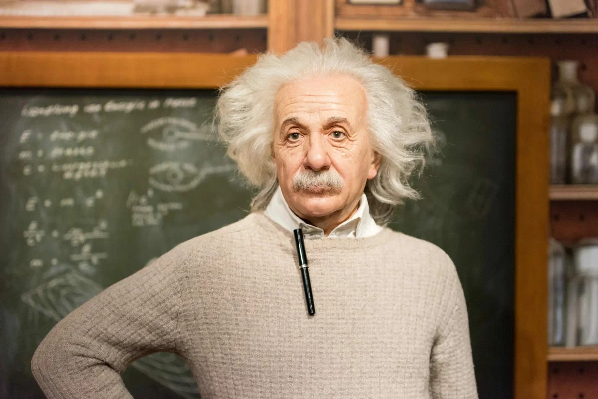
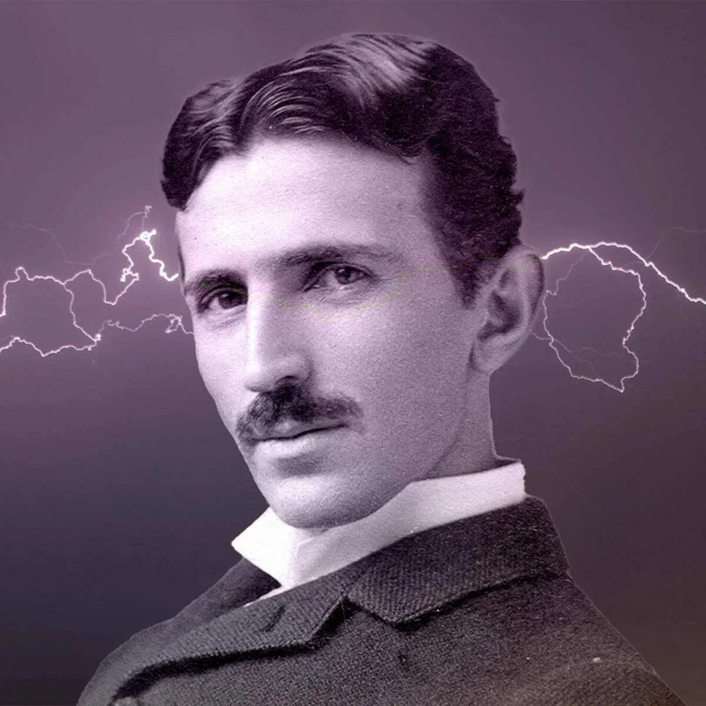

Эйнштейн, Альберт - швейцарский, немецкий и американский физик-теоретик и общественный деятель-гуманист, один из основателей современной теоретической физики. Лауреат Нобелевской премии по физике 1921 года. Его теория относительности изменила основания физики, заменив классическую механику и закон всемирного тяготения Ньютона. Персона XX века по версии журнала Time.
Жил в Германии (1879—1895, 1914—1933), Швейцарии (1895—1914), и с 1933 года до конца жизни — в США. Из Германии с приходом к власти нацистов был вынужден эмигрировать, и после публичного отказа от гражданства Германии (весной 1933 года) 24 марта 1934 года был его лишён. Гражданин США с 1940 года. Почётный доктор около 20 ведущих университетов мира, член многих Академий наук, в том числе иностранный почётный член АН СССР (1926).

Никола Тесла - американский инженер и физик-электроник, изобретатель в области электротехники и радиотехники, внёс существенный вклад в развитие электроинженерии. Наиболее известный разработкой современной системы электроснабжения переменного тока. После победы в «Войне токов» и демонстрации радио стал одной из самых известных личностей в истории науки ХХ века.
По национальности — серб, родился в Австрийской империи, вырос в Австро-Венгрии, в последующие годы в основном работал во Франции и США. В 1891 году получил гражданство США.Стивен Хокинг - британский физик-теоретик, космолог, астрофизик и писатель.
Директор по научной работе Центра теоретической космологии Кембриджского университета. Автор ряда научных трудов, в том числе совместной с Роджером Пенроузом работы по теоремам о гравитационной сингулярности в рамках общей теории относительности и теоретическому предсказанию выделения чёрными дырами излучения, часто именуемого излучением Хокинга. Хокинг первым изложил космологическую теорию, в которой были объединены представления общей теории относительности и квантовой механики. Активно поддерживал многомировую интерпретацию квантовой механики.